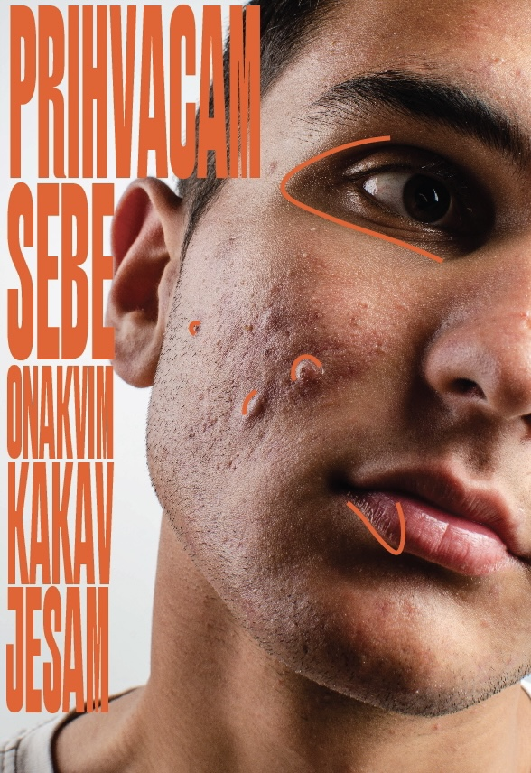
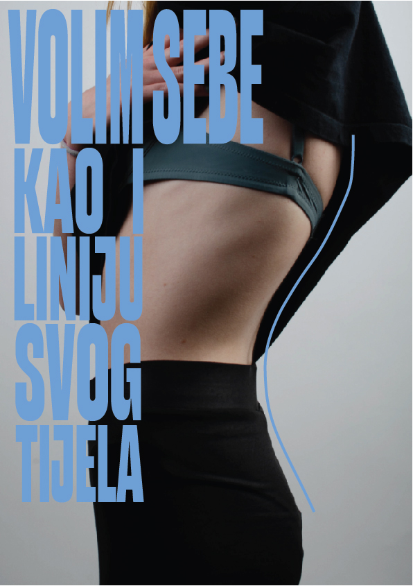
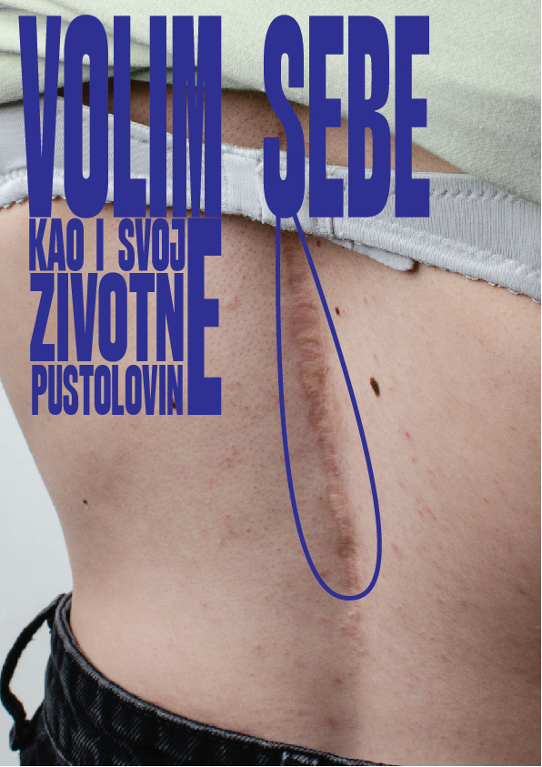

Još od malena znam što bih htio raditi (biti dizajner) te se kroz živo vodim izrekom Nemoj razočarati mlađeg sebe. Koliko god to nekada ustvari bilo teško mislim da idem prema tome. Na ovoj stranici možete vidjeti neke od mojih radova koje sam radio u svoje slobodno vrijeme.
  Body Positivity
U današnje vrijeme, uglavnom zbog medija, svi smo navikli na gledanje istih tijelesnih standarda svakog dana. Počeli smo vrijeđati sebe radi naših različitosti, a ne ponositi se njima kao što bi i trebali. Plakati su namjenjeni svim ljudima koji imaju nesavršenosti i kojih se stide. Cilj plakata je potaknuti takve osobe da nisu jedini s nesavršenostima te da ih ne bi smijeli skrivati, jer samo tako je moguće voljeti sebe. Plakati imaju izravnu poruku kako bi i djeca, koja su danas više nego ikad, opterećena svojim izgledom i standardima današnjeg svijeta, vrlo lako i bez velikog truda i razmišljanja shvatili poruku.
Eurovizija u Hrvatskoj
. Eurovizija predstavlja različitost i različite kulture Europe. Tako da se kroz ovaj plakat, na jedan moderan način, prikazuje Hrvatska i hrvatska kultura u ideji Hrvatske kao domaćina Eurovizije. Osim boja hrvatske zastave, zanimljiv prijenos kulture je i kroz slogan Don't go small under the stars
koji je izvučen iz pjesme Opomena
od Antuna Branke Šimića, jednog od najznačajnijih hrvatskih pjesnika.
Piktogrami
Svakodnevno se susrećemo u različitim situacijama ali i mjestima s njima. Piktogrami su inspirirani čistim pogledom na određene situacije, ili stvari, kako vidim tako prenosim. Neki nešto manje, a neki nešto više apstraktno.
Good For You
S citatom iz pijesme Selene Gomez, pokušao sam iskazati osjećaj kroz kojeg svi prolazimo u tajnosti kada se zaljubimo. Fizički izgledati dobro za tu osobu neshaćajući da je važnije ono što je osoba iznutra. Plakat je napravljen tako da tekst koji se nalazi na vrhu bude najviše izražen. Kako se rijeći good for you potamljuju pri dnu samog plakata, u prvi plan dolazim ja napravljen linijski.
Earth in me
serija plakata s kojom sam kroz neke elemente prirode (šuma,zrak,voda) i kroz poruke napisane na samim plakatima htio prikazati svoje osjećaje u tim trenutcima mog života.
Pastel colors
plakat je napravljen čisto zbog moje znatiželje. Kako volim boje odlučio sam napraviti plakat koji mi objašnjava određenu vrstu boja, to jest pastelnih.